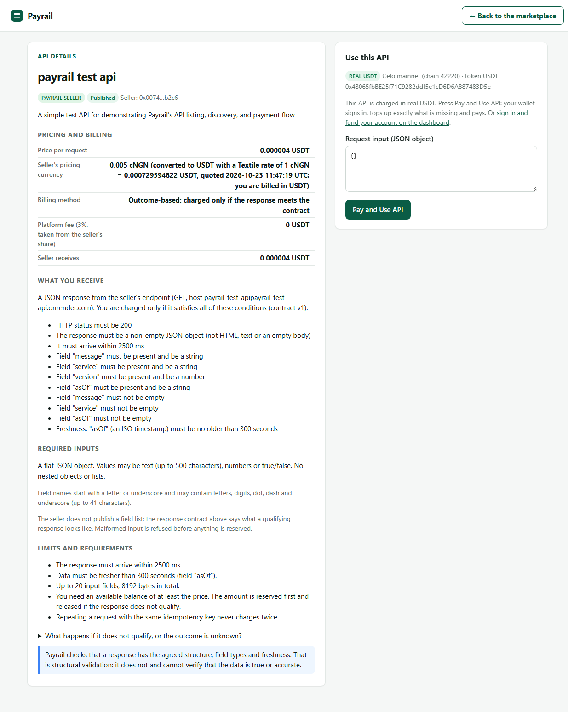
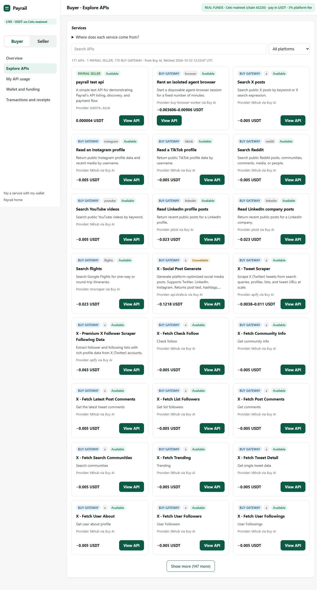

What is it?
An API marketplace and payment agent. You pick a service; Payrail works out how to pay for it from the stablecoin you actually hold.
Hackathon prototype · Celo mainnet · open source
Payrail finds the service, checks what you hold, converts a supported local stablecoin into the payment currency only when it has to, pays through Celo’s x402 Buy gateway, and hands back the response with a receipt you can verify on-chain.
Explore the Repository Read the Getting Started Guide
No hosted demo yet: Payrail runs on your own machine. What that means.

An API marketplace and payment agent. You pick a service; Payrail works out how to pay for it from the stablecoin you actually hold.
Price from the service’s own payment request, balance check, optional Textile FX conversion, x402 payment on Celo, then an on-chain check of what happened.
Many people and agents hold cNGN or another local stablecoin while the service wants USDT. Fixing that by hand, every time, is slow and risky. Payrail makes it one approved step.
How Payrail works
Browse the live Buy catalog (about 170 services) next to APIs listed by independent sellers.
Pay with USDT directly, or pick a supported local stablecoin. You see the live rate, fee and the most you could spend first.
Only when the balance is the wrong currency and a route is live. Textile FX swaps it to USDT in one signed order.
The x402 payment goes to the Buy gateway on Celo. Spending limits, locks and a journal guard every step.
The response is saved and hashed. Settlement is re-checked on-chain. Anything uncertain stops and is never retried.
Which currencies, routes and services you can use depends on what is live and supported right now. The app shows the real status for each; nothing is offered that the server will not do.
What Payrail supports
Three honest groups. Nothing in the second or third group is claimed as a working feature.
Proof
All on Celo mainnet. Each row links to the block explorer. The agent wallet signs; the payTo address belongs to the Buy gateway, which also submits the x402 settlement.
| What | Amount | Block | Transaction |
|---|---|---|---|
x402 payment to Buy, x.posts.search | 0.005 USDT | 79920194 | 0xfb012c51…17ac |
| x402 payment to Buy (direct order) | 0.005 USDT | 80001720 | 0x57c3c046…57fe |
| Textile FX swap, cNGN to USDT (convert-then-pay) | 1363.665 cNGN to 0.998910 USDT | 80038743 | 0x102eafff…acb7 |
| x402 payment funded by that swap | 0.005 USDT | 80038764 | 0xf3652222…2c9c |
| ERC-8004 agent registration (agent 9906) | n/a | 80032609 | 0xf654ea5f…ab1b |
Agent wallet 0x652C9023626d1a00AD0d130C9cdc5C5f3644D2a4 (owner of ERC-8004 agent 9906, checked on-chain)
x402 payTo (Buy gateway) 0x20faAca5F980E29639A0FCC6dcA6988E18ed333B
Full evidence report Receipts (CSV) Receipts (JSON) Seller test API repo
Re-check it yourself with node scripts/evidence.ts --verify: it re-reads every transaction from several Celo RPC endpoints and recomputes the response hashes.
For sellers
A seller signs in with a wallet, lists an API, proves they own it, tests it for free, defines what a qualifying response looks like, and publishes. Buyers pay only when the response meets that contract. Credentials are encrypted and sent only to the verified host.

Getting started
Needs Node.js 22.18 or newer. Nothing to build, and the commands below never spend money.
git clone https://github.com/justriri/Payrail.git
cd Payrail
npm install
cp .env.example .env # Windows PowerShell: Copy-Item .env.example .env
npm run check # type check and all tests (fakes only, about 5 minutes)npm run serve
# then open http://127.0.0.1:4402Live catalog, balances and quotes. No key is loaded, so it cannot pay.
node --env-file=.env scripts/order.ts --service x.posts.search
node --env-file=.env scripts/routes.ts
node --env-file=.env scripts/evidence.ts --verifyPrints the route, cost and a plan digest. Paying needs a wallet key file kept outside the project, an explicit --execute flag and your confirmation.
Demo walkthroughArchitectureWhat is real, what is notLive test runbookWallet key handling
src/ planner, policy, executors, Textile, Mento and Buy clients, marketplace, evidenceweb/ the app’s pages, plain JavaScriptscripts/ command-line tools and the server entry pointtest/ 687 tests with fakes; browser regressions in scripts/browser/docs/ guides, and this page (docs/index.html)Limits